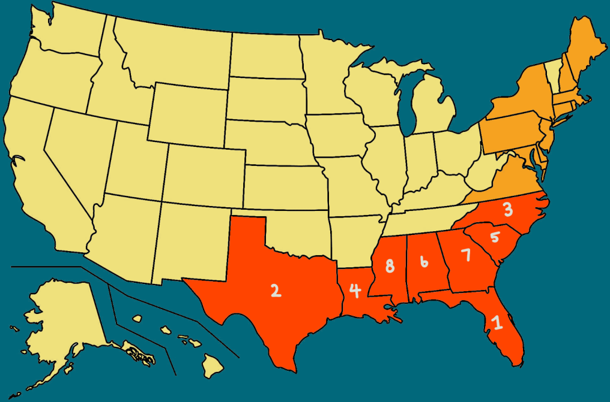

Map of the United States

Statistics and Information
These hurricane statistics have been recorded since 1851 and according to them shown these eight states are most likely
to get hit by a storm. Major storms are classified to be Category 3, 4, 5 hurricanes.
Florida
- As of 2019, Florida has been hit with a total of 120 storms, in which 37 of the storms were classified as major storms.
- The strongest and most destructive hurricane that hit Florida was hurricane Andrew in 1992
- Click here to learn more about hurricanes in Florida.
Texas
- As of 2019, Texas has been hit with a total of 64 storms, in which 19 of the storms were classified as major storms.
- Hurricane Harvey (2019) was the most destructive storm to hit Texas.
- Click here to learn more about hurricanes in Texas.
North Carolina
- As of 2019, North Carolina has been hit with a total of 55 storms, in which 7 of the storms were classified as major storms.
- Hurricane Hazel (1951) was the strongest storm to hit North Carolina. This was also the only Category 4 storm to hit the State.
- Click here to learn more about hurricanes in North Carolina.
Louisana
- As of 2019, Louisana has been hit with a total of 54 storms, in which 17 of the storms were classified as major storms.
- Hurricane Katrina (2005) was the most powerful storm to hit Louisana. This storm cost over $100 billion in damages
and left 1,833 total dead.
- Click here to learn more about hurricanes in Louisana.
South Carolina
- As of 2019, South Carolina has been hit with a total of 30 storms, in which 5 of the storms were classified as major storms.
- Hurricane Hugo (1989) is considered to be the worst hurricane in South Carolina's modern history.
- Click here to learn more about hurricanes in South Carolina.
Alabama
- As of 2019, Alabama has been hit with a total of 24 storms, in which 5 of the storms were classified as major storms.
- Hurricane Frederic (1979) was the strongest hurricane to ever make landfall in Alabama.
- Click here to learn more about hurricanes in Alabama.
Georgia
- As of 2019, Georgia has been hit with a total of 22 storms, in which 3 of the storms were classified as major storms.
- Hurricane Michael (2018) was the strongest hurricane to make landfall in Georgia.
- Click here to learn more about hurricanes in Georgia.
Mississippi
- As of 2019, Mississippi has been hit with a total of 19 storms, in which 8 of the storms were classified as major storms.
- In 1969, hurricane Camille was the most destructive hurricane to make landfall in Mississippi.
- Click here to learn more about hurricanes in Mississippi.